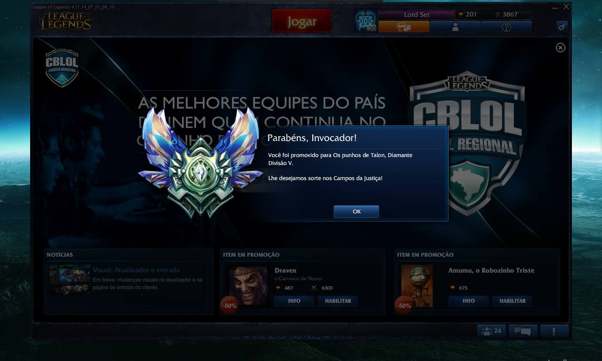
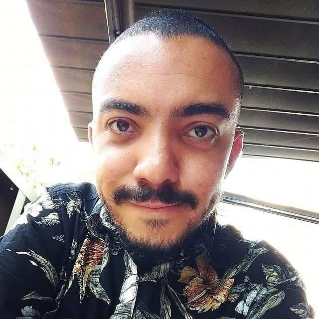

Why you should hire me to work for
Hello! Thank you for your interest in reading my application!
My name is Matheus "Set" Inacio. I'm a Brazillian developer and I'm very interested in working with you all.
This page is my application, cover letter and resumé, built specifically for this job opening. I elaborate on each topic, but you should be able to skim over them, while still getting the main ideas.
A brief story of my life

I absolutely love creating things and seeing them come to life. It's magical. And there's nothing like the thrill of overcoming a big challenge. You can see why I love programming.
I've met this passion of mine when I was a kid, around 11 years old, when I started to develop games in RPG Maker - a program for creating jrpgs - learning every single tool in the software. Although it was visual scripting, everything was there: if clauses, loops, local and global scopes, objects, and many other things. The programming logic was the first logic I knew. This was also when I learned a lot of English on my own, using a physical dictionary, since I didn't have internet connection back then.
I have strayed from the path for many years, worked in many other areas, most notably as a high school tutor, and accumulated experience with different things. When the pandemics hit and left me unemployed, I saw it as an opportunity to get back to programming, my true passion, and so I did. I have been very dedicated to learning it since then, both by myself, through courses, guides, documentation and experimentation, and by later entering the rapidly growing Trybe programming school back in March.
Currently, I'm working as a Frontend Developer at Estúdios Flow, the studio behind Flow Podcast, one of the largest podcasts in Brazil, with over 3 million subscribers on YouTube. We're working on tons of improvements for the platform, and I've been coding with Next, React and TypeScript.
I love gaming
And I'm also very competitive
I've been playing since ever. And I've always enjoyed playing challenging games. I love theorycrafting builds, creating strategies and trying different things.
I've played many games in a semi-competitive manner, such as mythic raids in WoW, high tier Yu-Gi-Oh in the days of Dueling Network.
And, of course, League of Legends. I've started back in Season 2, on the Syndra patch. I've hit Gold in Season 3 and Diamond in Season 4.
Below is a screenshot I've fished from a 2014 Facebook post. Good memories.
I have since then been on and off LoL, while playing other games, but recently I played a lot of LoR and really enjoyed it.
I haven't been playing much lately because I'm working AND studying on a very intense bootcamp but I most definitely will play more again when I finish the course.
I'm a problem solver
I cherish a good challenge. Truly, I am driven by challenges. I seek them, and I treasure facing them.
This makes me a good problem solver. I have many tactics for tackling problems, but mostly I always break them in smaller pieces - I analyze them, create solutions, then create problems for the solutions, and work iteratively until I come up with a solution that will really crack it.
My early contact with programming allows me to see the world critically, and I always try to simplify my solutions to make them as elegant as possible.
I'm also a people person
I'm really sociable. I truly enjoy talking about anything, and I enjoy a good informal ambient. I work hard, but I also like to chill, and to play hard.
Thanks to my previous career as a high school tutor, I'm communicative, and I'm always open to give and receive feedback. I can be perfeccionist at times, but I'm working on that.
This is me at a party (with the wizard hat):

I learn really, really fast
I know everyone says that, but I do have a true knack for it.
I have also extensively studied the art of learning, also thanks to my previous career as a tutor, and I wrote a brief scientific article on a method of revision.
I've got skills in the techs you use
Last, but not least
Besides the logical and soft skills I've mentioned, I'm also quite versed in React, Redux and TypeScript. I've used "raw" Redux applied to vanilla js, and I've created a mini-toolkit to use in the projects at Trybe.
Lately, I've been using Redux Toolkit, mostly.
I often advocate for performance in my team, and strive to get the lifecycle and state management right in order to prevent unnecessary re-renders, and get shorter render commits.
I recognize I'm still a newcomer to the world of development, so I'm always looking for references and studying to get better.
I also have a solid grasp of Jest and React Testing Library.
I've got on my radar to start soon the Epic React course by Kent C. Dodds, creator of RTL.
As for backend, I know MongoDB, SQL, Node and a few of its main libraries such as Express. I also have interest in learning GoLang, your primary backend language.
Bonus skills
I've talked about my main skills, but I believe some other things may come in handy:
- I can design. I understand most of the principles, such as information hierarchy and white space. I know how to use the tools, Adobe Suite, Figma, among others.
- I can write. I know how to write well, since I have taught essay writing in Portuguese in the past.
- I can illustrate. I'm not a professional artist, but I can help illustrating small things. Here are some pictures of concept arts I created for a game I'm (slowly) developing on Scratch.
Testimonials
-

"It's always a pleasure to work with Inacio! His curiosity, industriousness and creativity are notable and make him an invaluable member of any endeavor."
Renato Bispo, colleague at Trybe. LinkedIn
-
"So good a business partner that became a brother. He's a one of a kind person that always goes through with what he's proposed to do."
Gabriel Duarte, former business partner. Email
-
"Inacio is very thoughtful and dedicated to the projects. From the beginning of the course, he's always been available to help the class by creating explanatory videos, participating in study rooms and answering questions that appear in the course's channel. For sure an inspiring person!"
João Lima, colleague at Trybe. LinkedIn